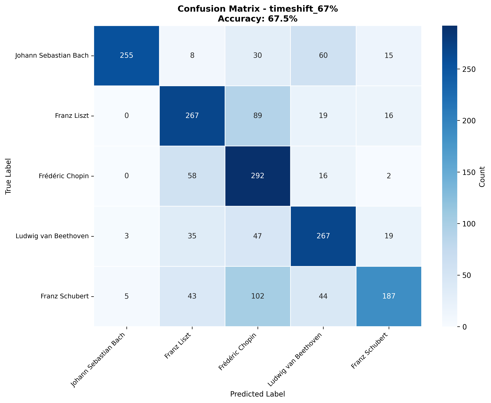
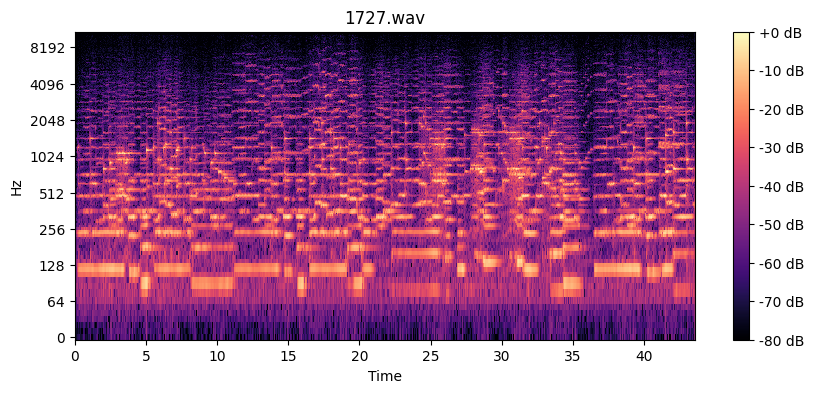

Piano Composer Classification
Deep Learning for Musical Style Recognition
As a lifelong violinist, this project was inspired by childhood memories of listening to classical radio with my father,also a violinist,who would quiz me on identifying composers. As I got older, I improved at recognizing compositional styles, which made me wonder: could a computer learn to do the same? This project became my deep dive into machine learning and audio classification (using computer vision techniques), evolving from a simple experiment into an in depth project of neural network architecture design for music understanding.
Project Summary
In this project, I developed a convolutional neural network that classifies piano recordings among 5 classical composers with 67.5% accuracy (3.4x better than random guessing). Beyond the model itself, I built an interactive GUI that utilizes Grad-CAM (Gradient-weighted Class Activation Mapping) (which I learned about in class), to visualize exactly which regions of the audio spectrogram the model focuses on when making predictions. Users can click anywhere on the visualization to hear the corresponding audio segment, revealing what the model "thinks" sounds like Bach, Beethoven, Chopin, Liszt, or Schubert. This tool has potential applications in computational musicology, helping researchers understand and quantify the acoustic signatures that define each composer's unique style.
When I was showing my professional violinist father my project, I played a segment that showed strong Schubert activation and his immediate reaction was "That sounds so Schubert", which was a great confirmation that the patterns the model learned align with how trained musicians perceive compositional style. What was different was he couldn't tell what the factor was that "sounded like Schubert" which the model can show!
Confusion Analysis

Confusion matrix showing classification patterns across composers
The confusion matrix reveals interesting patterns that align with music intuition. Bach (Baroque era) is rarely confused with Romantic composers. The most common confusions occur between Romantic era composers (Chopin, Liszt, Schubert) who share stylistic similarities, a challenge even for trained musicians like me.
Dataset Evolution
Initial Approach: MusicNet
The project initially used the MusicNet dataset, but several critical issues emerged:
- Varying instrumentation: Recordings included orchestral, chamber, and solo works, I believed the model was learning to identify instruments rather than compositional style
- Inconsistent recording quality introduced confounding variables unrelated to composition
- Data leakage risk: Without piece level splitting, the 30 second segments from the same performance could appear in both train and test sets, artificially inflating accuracy
Solution: MAESTRO Dataset
Switching to MAESTRO resolved these issues:
- Piano-only recordings: 200+ hours ensuring the model learns compositional style, not instrumentation
- Consistent conditions via Yamaha Disklaviers reducing acoustic variability
- Piece level metadata enabling piece aware train/test splits instead of blindly splitting the 30 second segments
Preventing Data Leakage with Piece-Aware Splitting
A critical challenge in audio classification is data leakage, when the 30 second segments from the same recording appear in both training and test sets, the model can memorize performer specific or recording specific features (ie. air conditioner noise) rather than learning compositional style. So I implemented piece aware splitting: no piece appears in both train and test sets, ensuring the model is evaluated on truly unseen pieces. This is essential for honest evaluation of musical understanding.
How It Works

Mel spectrogram visualization showing frequency content over time
Audio recordings are converted into mel spectrograms which are visual representations that capture frequency content over time. Each 30 second segment produces a 256x1292 image showing 256 frequency bands. A convolutional neural network then learns to recognize patterns in these spectrograms that distinguish each composer's style.
Important Architectural Insight
Early experiments revealed that models using Flatten layers achieved 55.8% accuracy by "cheating", essentially learning recording studio artifacts rather than musical patterns. Different composers were recorded in different studios with distinct acoustic signatures. Switching to GlobalAveragePooling forced position invariant learning, ensuring the model learns what musical patterns exist rather than where they appear. This architectural choice was crucial for genuine musical understanding.
Model Architecture
- Convolutional Blocks: 3 blocks with 32 → 64 → 128 filters
- Pooling: GlobalAveragePooling2D (position invariant)
- Regularization: Batch normalization, dropout (0.2-0.4), L2 regularization
- Dense Layer: 64 units with ReLU activation
- Output: 5-class softmax
Training Innovations
- Focal Loss: Down weights easy examples (γ=2.5) with per-class alpha weights. This forces the model to learn the hard examples for composers that are more similar (ie the romantic composers vs Bach)
- Time Shift Augmentation: Random circular shifts (±100 frames) improved accuracy from 58% → 67.5%. This solves position memorization and limited training data
- Collapse Detection: Custom callback reinitializes output layer if mode collapse detected. This solves the fact that the model would "give up" and just predict one class when it gets lazy.
- Label Smoothing: 0.15 smoothing prevents overconfident predictions
Per-Composer Results
| Composer | Accuracy | Precision | Samples |
|---|---|---|---|
| Frédéric Chopin | 79.3% | 52% | 368 |
| Ludwig van Beethoven | 72.0% | 66% | 371 |
| Johann Sebastian Bach | 69.3% | 97% | 368 |
| Franz Liszt | 68.3% | 65% | 391 |
| Franz Schubert | 49.1% | 78% | 381 |
IMPORTANT FINDING
Bach achieves 97% precision. When the model predicts Bach, it's almost always correct. This reflects the distinctive characteristics of Baroque era compared to Romantic era composition.
Model Interpretability with Grad-CAM

Grad-CAM heatmap showing model attention on a correctly classified segment
Using Gradient-weighted Class Activation Mapping (Grad-CAM), I built an interactive GUI to visualize which spectrogram regions the model focuses on. This analysis confirmed the model learned musically meaningful features and what defines a composers style.
Project
- Trained Model: 67.5% accurate 5-class composer classifier (.keras format)
- Interactive GUI: Tkinter application with Grad-CAM visualizations and audio playback
- Data Pipeline: Complete preprocessing and balancing scripts for MAESTRO dataset
- Training Framework: Modular codebase with Focal Loss, collapse detection, and augmentation
- Documentation: I would like to try and write a paper about these findings since they might be helpful for musicology
Future Directions
This project establishes a foundation for several research directions: extending to additional composers and musical periods, investigating transfer learning from larger audio models like wav2vec, exploring transformer architectures for longer temporal dependencies, and developing real-time classification for music streaming applications.